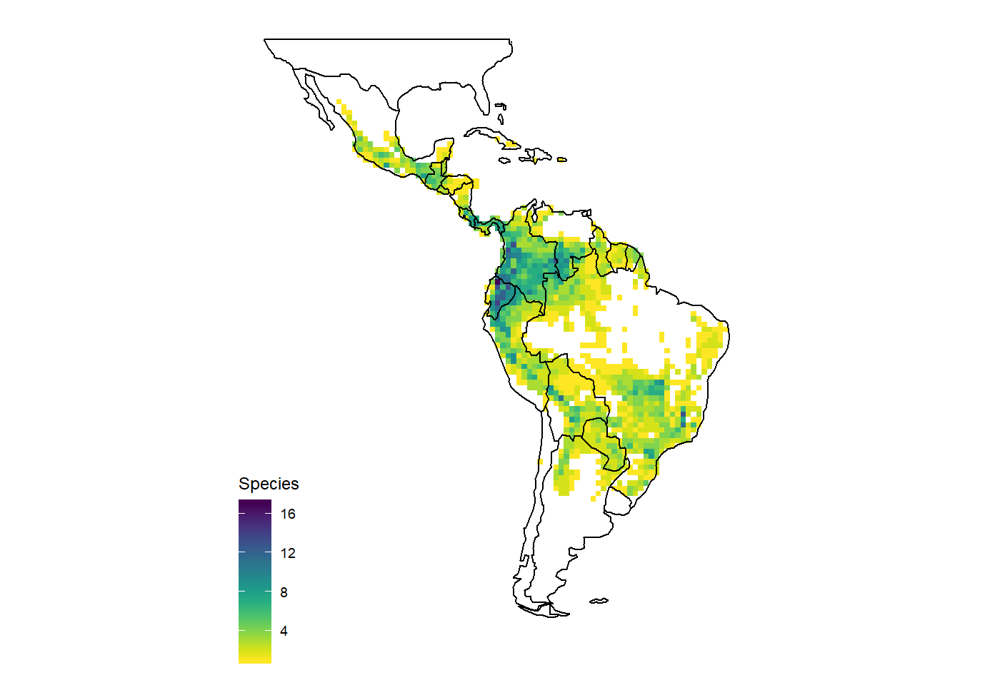
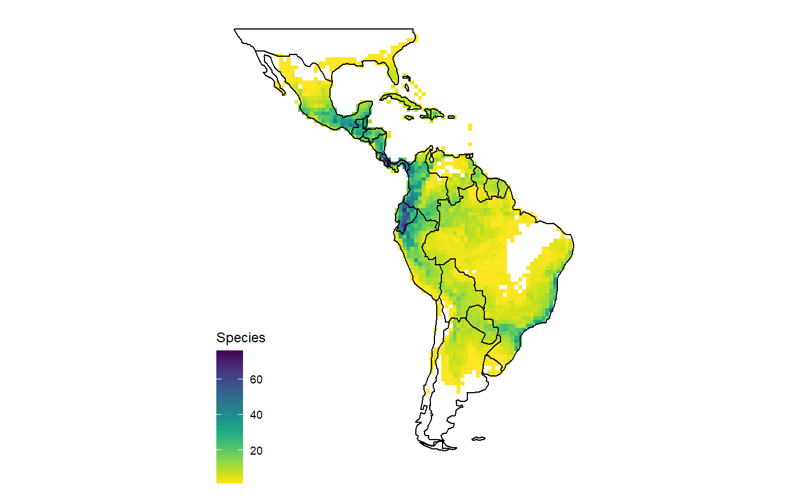
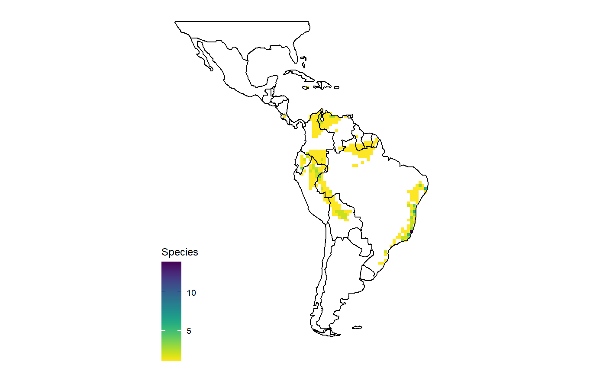

Select and plot bromeliaceae distribution and diversity
Select_and_plot_bromeliaceae_distribution_and_diversity.RmdThe bromeliad package contains estimated distributions for 2395 species of the pineapple family (Bromeliaceae) plus three functions to access and visualize this data: get_range, map_species, map_richness. The included ranges were estimated from occurrence records, using different algorithms, including climate suitability models based on climate, convex hulls and geospatial buffering. Make sure to check Zizka et al. 2019 for the methodology of range estimation.
Libraries and installation
You can install bromeliad using the devtools package. If you want to visualize species richness patterns, you also need to install speciesgeocodeR.
Selection and vizualisation
If you want to use data for all bromeliaceae, you can access them directly via the dataset using data(). If you are only interested in a subset of the species you can use the get_range function to select species based on taxonomy (scientific name, canonical name, genus, subfamily) or traits (life form, range size, conservation assessment), or a combination of those.
You can select one or multiple species and visualize their range as per species map. The type argument controls what kind of range estimation is selected.
# range polygon based on scientific name with authorities
dat <- get_range(scientific = "Aechmea mexicana Baker")
# presence absence model
dat <- get_range(scientific = "Aechmea alba Mez", type = "binary")
#modelled habitat suitability
dat <- get_range(scientific = "Aechmea alba Mez", type = "suitability")
# based on canonical name
dat <- get_range(canonical = "Aechmea mexicana")
# multiple species
dat <- get_range(canonical = c("Aechmea mexicana", "Aechmea alba"))
# Species maps
map_species(canonical = "Aechmea mexicana")
#> OGR data source with driver: ESRI Shapefile
#> Source: "C:\Users\az64mycy\AppData\Local\Temp\RtmpwzD2tq", layer: "ne_50m_land"
#> with 1420 features
#> It has 3 fields
#> Integer64 fields read as strings: scalerank
#> Regions defined for each Polygons
#> Warning: Ignoring unknown parameters: datum
#> Coordinate system already present. Adding new coordinate system, which will replace the existing one.
You can also use higher rank taxa to select multiple species at once.
# one genus
dat <- get_range(genus = "Aechmea")
# multiple genera
dat <- get_range(genus = c("Aechmea", "Zizkaea"))
# subfamily
dat <- get_range(subfamily = "Pitcairnioideae")
#Richness pattern
map_richness(dat)
#> OGR data source with driver: ESRI Shapefile
#> Source: "C:\Users\az64mycy\AppData\Local\Temp\RtmpwzD2tq", layer: "ne_110m_admin_0_countries"
#> with 177 features
#> It has 94 fields
#> Integer64 fields read as strings: POP_EST NE_ID
#> Regions defined for each Polygons
Or based on traits and conservation status.
#life form
dat <- get_range(life_form = "epiphyte")
map_richness(dat)
#> OGR data source with driver: ESRI Shapefile
#> Source: "C:\Users\az64mycy\AppData\Local\Temp\RtmpwzD2tq", layer: "ne_110m_admin_0_countries"
#> with 177 features
#> It has 94 fields
#> Integer64 fields read as strings: POP_EST NE_ID
#> Regions defined for each Polygons
Different criteria can also be combined, for instance to get all species of Aechmea classified as critcally endangered, endangered or vulnerable.
dat <- get_range(genus = "Aechmea", assessment = c("CR", "EN", "VU"))
map_richness(dat)
#> OGR data source with driver: ESRI Shapefile
#> Source: "C:\Users\az64mycy\AppData\Local\Temp\RtmpwzD2tq", layer: "ne_110m_admin_0_countries"
#> with 177 features
#> It has 94 fields
#> Integer64 fields read as strings: POP_EST NE_ID
#> Regions defined for each Polygons